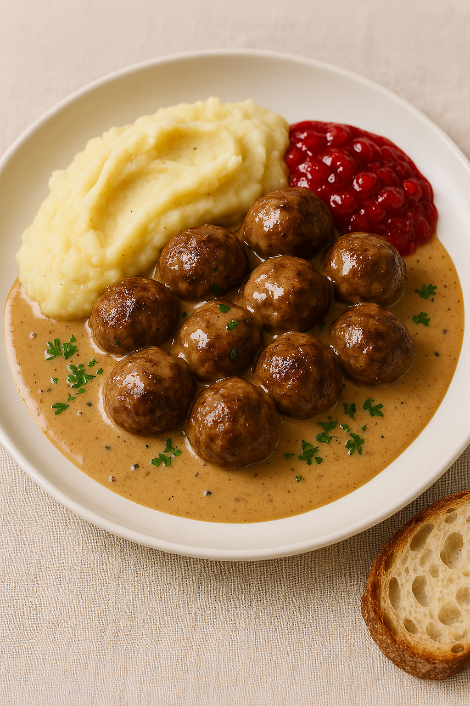

Home
Swedish Meatballs

Description
Traditional Swedish Meatballs with Creamy Gravy
Ingredients
- 500 g ground beef
- 250 g ground pork
- 1 small onion, finely chopped
- 1/2 cup breadcrumbs
- 1 egg
- 100 ml milk
- 1/2 tsp ground allspice
- 1/2 tsp ground white pepper
- 1 tsp salt
- 2 tbsp butter (for frying)
- 2 tbsp butter
- 2 tbsp flour
- 400 ml beef broth
- 150 ml Norrmejerier cream
- 1 tsp soy sauce
- Salt and pepper to taste
Steps
1. Prepare the Meatballs
- Mix breadcrumbs and milk in a bowl and let sit for 5 minutes.
- In a large bowl, combine ground beef and pork with onion, egg, soaked breadcrumbs, allspice, pepper, and salt.
- Shape into small meatballs (about the size of a walnut).
- Fry in butter until browned on all sides and cooked through. Remove and set aside.
2. Make the Gravy
- Melt butter in the same pan. Stir in flour and cook until lightly browned.
- Gradually whisk in beef broth until smooth.
- Add cream and soy sauce, then simmer until thickened. Season with salt and pepper.
- Return meatballs to the pan and simmer in the gravy for 5–10 minutes.
3. Serve
- Plate the meatballs with creamy mashed potatoes.
- Spoon gravy over the top and add a dollop of lingonberry jam.
- Add pickled cucumbers if desired for a refreshing contrast.